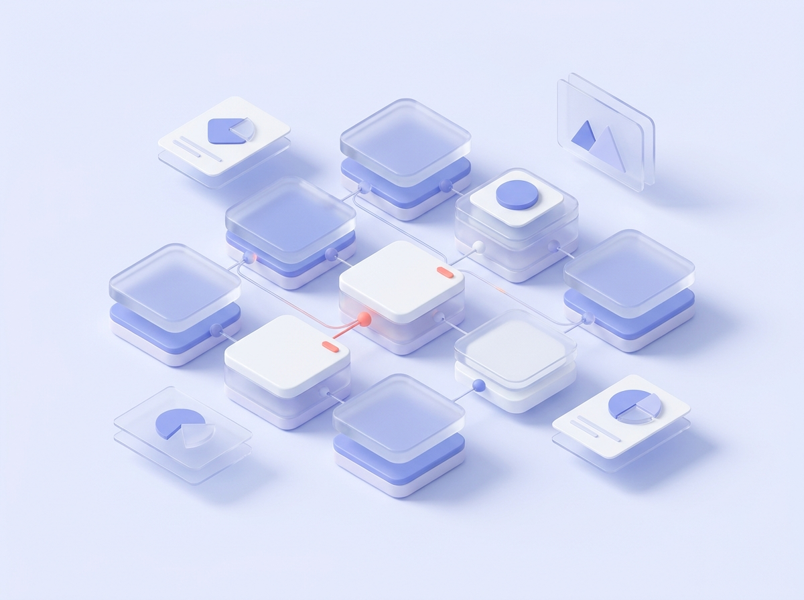

我是零基础新手
从 CANN 第一课与 2 天启航营起步
我是高校教师
开课申请、16 周常态课与 13 门共建课
我要备赛 / 考证
CANNJudge 题库、4 周冲刺与等级认证
按技术方向学习（5 大核心主线）
按你想掌握的 AI 与 NPU 技术方向直接进入系统路线图，与「学习路径」主线一一对应
CANN 第一课 · 零门槛快速上手
所有方向的共同起点，5 节交互式课程约 2 小时跑通昇腾 NPU 开发全流程


更多专题与资源入口
除角色主线外，你还可以按全栈领域查阅课程、获取高校赛事资源或检索深度技术博客
12 大领域
全栈课程体系地图
按初 / 中 / 高级纵览 CANN 全栈知识结构，支持按难度快速定位对应课程。
Ascend C 算子
大模型训推
离线推理 ACL
推荐系统
模型量化
性能调优
支持悬停预览大纲
进入课程体系 →
13 门共建课
高校教学、赛事与共建
汇集高校开课 5 大模块、13 门高校共建课程、SwanLab 案例及科研案例征集。

赛事备考 & 等级认证
CANNJudge 题库与创新大赛指南
高校教师 / 竞赛选手
进入高校与赛事 →
共 54 篇
技术博客精选
覆盖算子（27）、推理（23）、训练（4）深度原理解析，支持关键词即时检索。
Ascend C 核函数三级流水线与 Double Buffer 精讲
DeepSeek MLA 与 MoE 推理在昇腾 NPU 上的优化
MindSpeed 3D 并行训练显存优化与通信掩盖实战
算子 / 推理 / 训练专栏
检索全部博客 →
高校开课与考核全流程指导
从开课申请、班级算力配置、教学实验到 CANNJudge 考核与认证衔接的一站式支持
STEP 01
开课申请与对接
通过社区 Issue 或高校合作通道提交授课计划，获取专属教学对接与课程包。
STEP 02
选课与算力配置
按需选用 2 天启航营至学期常态课大纲，为班级统一配置 CANNLab 云端算力。
STEP 03
教学与实验实践
复用官方 PPTX、原子课程与 13 门高校共建实验代码，学生浏览器零配置实操。
STEP 04
考核评测与认证
接入 CANNJudge 在线题库自动判题考核，并衔接昇腾开发者等级认证与赛事。
赛事备考专区 & 等级认证路径
包含 CANNJudge 在线题库、昇腾 AI 创新大赛备赛指南与认证体系映射。
科研案例征集中
欢迎提交基于昇腾 CANN 的论文复现、算子创新与系统优化实践案例，共建开源学术生态。